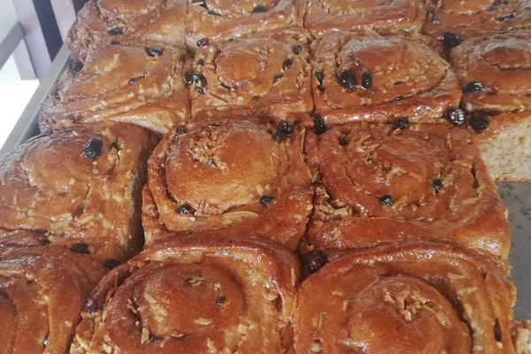
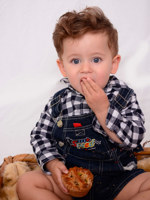
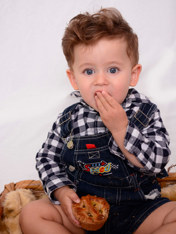
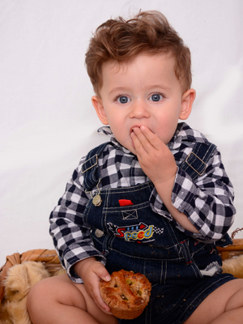

Nuestro Pan

 


Nuestro pan tiene una tradición desde 1980, somos los pioneros en el pan integral en la región de la Laguna (Torreón, Gómez y Lerdo). Contamos con más de 40 variedades de pan integral realmente saludables por su alto contenido de fibra, además de delicisosos, si no los han probado les van a gustar